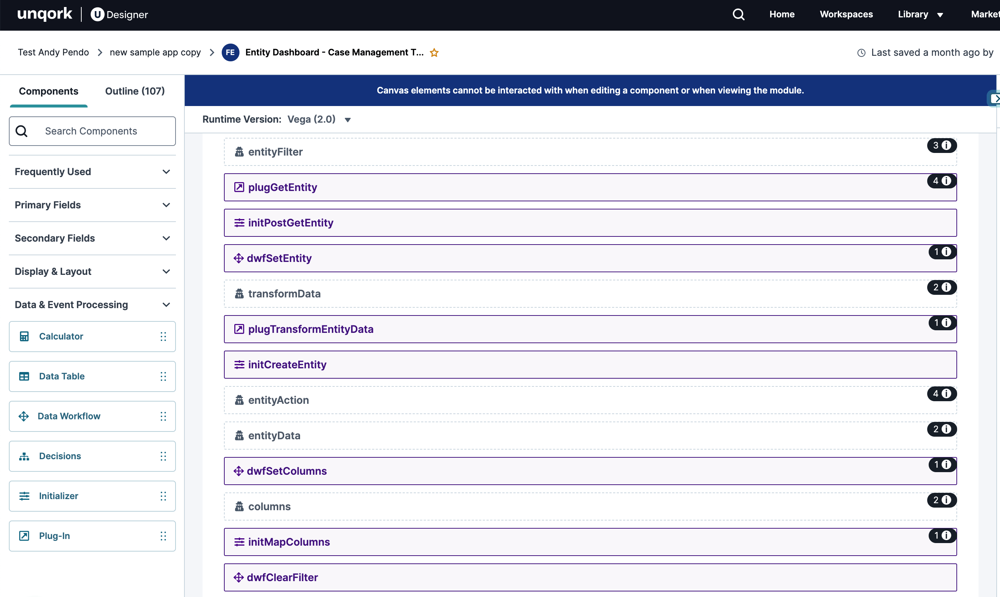
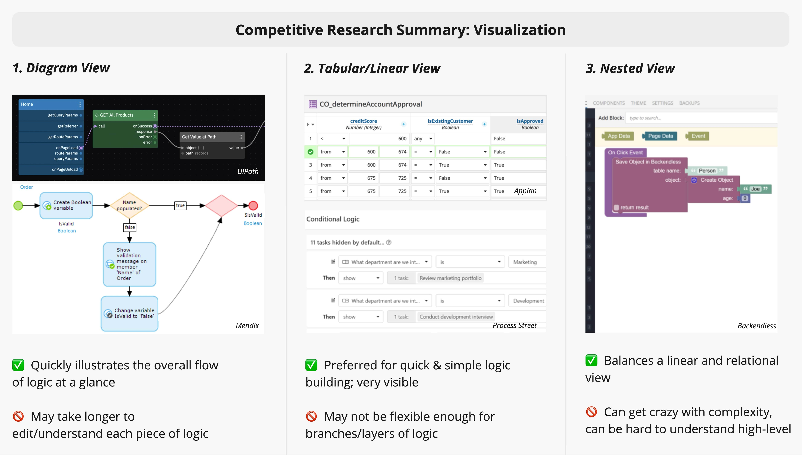
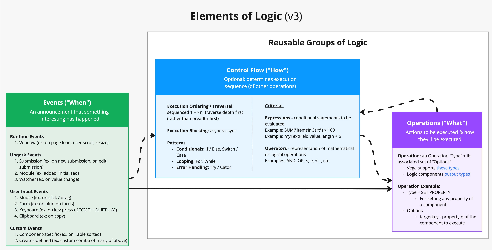
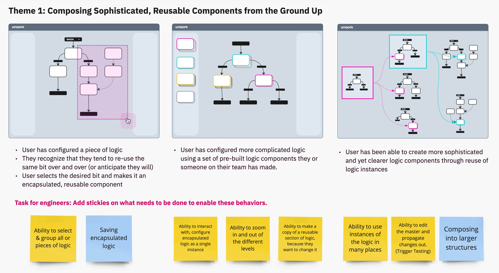
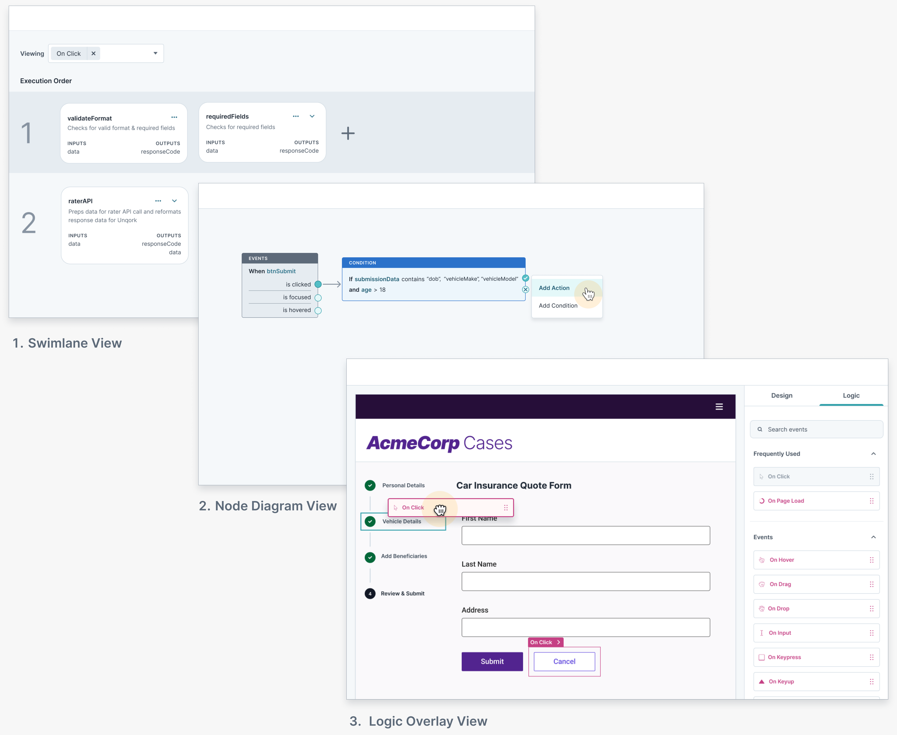
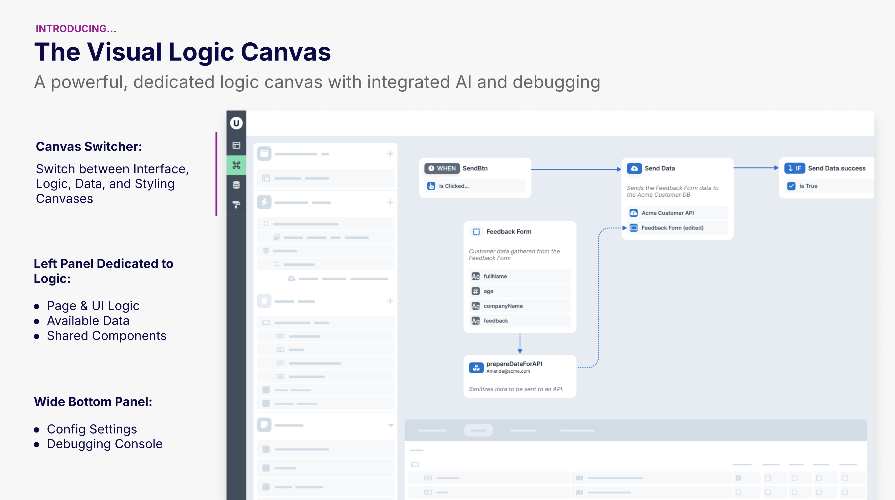
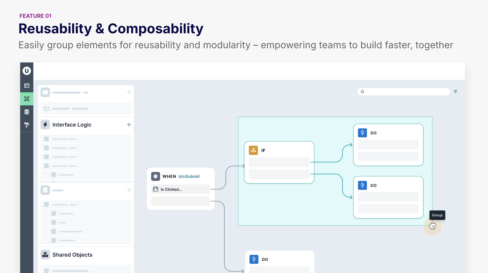
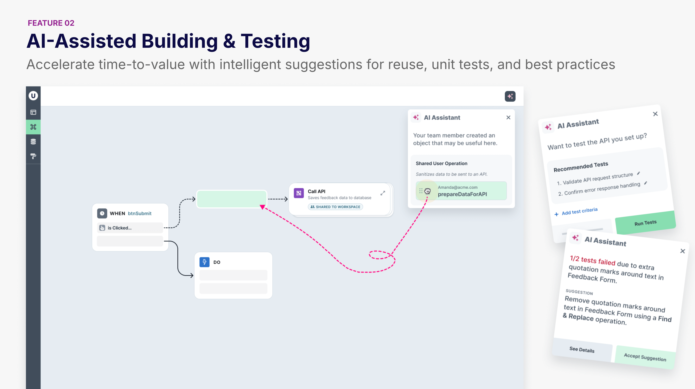
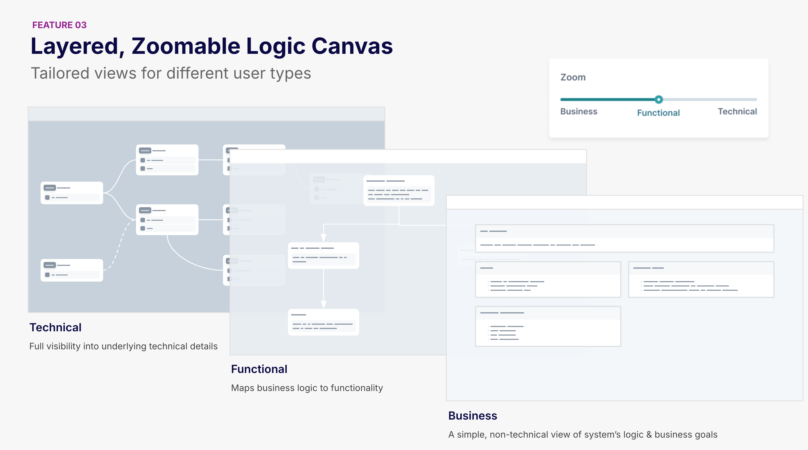

Logic Vision
Slashing time-to-build in no-code with a unified, visual logic canvas
Unqork enables users to build enterprise-grade software applications visually, without a single line of code. I've been defining the vision for our core feature of building logic, which our users spend over 75% of their time on.
Problem: Currently, building logic in Unqork is perplexing to understand or orchestrate at scale.
Solution: A powerful & easy-to-use logic canvas focused on reusability, layered views, and AI-assistance.
1. DISCOVERY & RESEARCH
Through user research, it became clear that the existing way of building logic in Unqork is confusing and not optimized for scale. The canvas needs to be reimagined.

Users build logic in Unqork today by dragging in & configuring 5 types of logic components
(Calculator, Data Workflow, Decisions, Initializer, and Plug-In)
From my research, here were some of the challenges of building logic in Unqork:

2. DEFINING WITH STAKEHOLDERS
I defined the building blocks and themes of logic through stakeholder workshops, establishing the product & design strategy.
The problem space is vast and complex; and with evolving stakeholders, this remains a design-led project. I facilitated 3 workshops (virtual and in-person) to gather stakeholders and align on key project elements.
I crafted artifacts on terminology, use-cases, and themes based on our conversations.

I diagrammed the basic building blocks of logic to align the team on our foundations
Our project objectives were to 1) establish a powerful framework that meets user needs, 2) empower creators to configure & test logic confidently, and 3) facilitate teams to configure logic at scale, while maintaining quality.
3. DESIGN EXPLORATIONS
I explored various design concepts and themes, iterating based on stakeholder and user feedback.

I shared sketches of themes with engineers to get them thinking about implementation needs.

Different visualization methods for building logic
4. SHARING THE VISION
The end product was a slide deck highlighting features of the new Logic Canvas, aimed to communicate the vision to leadership and secure its place on the roadmap.




5. RESULTS & REFLECTIONS
The vision shareouts generated excitement across all levels of the company, from the CEO & CPO to engineers, product managers, and Unqork users.
Mission accomplished — we successfully aligned on a vision for the Logic Canvas! Now I'm working on a V1 to get implemented in the next few months.
Through this project, I learned the importance of involving stakeholders throughout the process to ensure they are heard at every step.
Gaining insights from each person’s unique perspective was also crucial in shaping this ideal state — I definitely couldn’t have done it alone.
Some Feedback:
“This is what I've been wanting to see for so long! If we had these features today, I would use Unqork to build my personal projects too." — Unqork User
"This workshop was an amazing showcase of the power of cross collaboration and knowledge sharing!" — Engineer
"Congrats on an absolutely AMAZING presentation to [the CPO] on the logic builder vision. He was gushing on the work!" — Head of Design
“This is the best example of team collaboration I’ve ever seen at Unqork.” — VP, Engineering